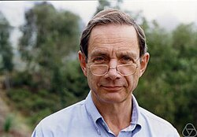

Michael Artin | |
|---|---|
 Michael Artin in 1999 | |
| Born | 28 June 1934 Hamburg, Germany |
| Education | Princeton University (BA) Harvard University (PhD) |
| Known for | Artin approximation theorem Algebraic Spaces |
| Awards | Harvard Centennial Medal (2005) Steele Prize (2002) Wolf Prize (2013) National Medal of Science (2013) |
| Scientific career | |
| Fields | Algebraic geometry Noncommutative algebra |
| Institutions | MIT |
| Thesis | On Enriques' Surfaces (1960) |
| Oscar Zariski | |
Doctoral students | Eric Friedlander David Harbater Zinovy Reichstein Amnon Yekutieli |
Michael Artin (German: [ˈaʁtiːn]; born 28 June 1934) is an American mathematician and a professor emeritus in the Massachusetts Institute of Technology Mathematics Department, known for his contributions to algebraic geometry.[1][2]
Artin was born in Hamburg, Germany, and brought up in Indiana. His parents were Natalia Naumovna Jasny (Natascha) and Emil Artin, preeminent algebraist of the 20th century of Armenian descent. Artin's parents left Germany in 1937, because his mother's father was Jewish.[3] His elder sister is Karin Tate, who was married to mathematician John Tate until the late 1980s.
Artin did his undergraduate studies at Princeton University, receiving an A.B. in 1955. He then moved to Harvard University, where he received a Ph.D. in 1960 under the supervision of Oscar Zariski, defending a thesis about Enriques surfaces.[1][4]
In the early 1960s, Artin spent time at the IHÉS in France, contributing to the SGA4 volumes of the Séminaire de géométrie algébrique, on topos theory and étale cohomology, jointly with Alexander Grothendieck. He also collaborated with Barry Mazur to define étale homotopy theory which has become an important tool in algebraic geometry, and applied ideas from algebraic geometry (such as the Nash equilibrium) to the study of diffeomorphisms of compact manifolds.
His work on the problem of characterising the representable functors in the category of schemes has led to the Artin approximation theorem in local algebra as well as the "Existence theorem". This work also gave rise to the ideas of an algebraic space and algebraic stack, and has proved very influential in moduli theory.
He also has made important contributions to the deformation theory of algebraic varieties, serving as the basis for all future work in this area of algebraic geometry. With Peter Swinnerton-Dyer, he provided a resolution of the Shafarevich-Tate conjecture for elliptic K3 surfaces and the pencil of elliptic curves over finite fields.
He contributed to the theory of surface singularities which are both fundamental and seminal. The rational singularity and fundamental cycles, which are used in matroid theory, are such examples of his sheer originality and thinking.
He began to turn his interest from algebraic geometry to noncommutative algebra (noncommutative ring theory), especially geometric aspects, after a talk by Shimshon Amitsur and an encounter in University of Chicago with Claudio Procesi and Lance W. Small, "which prompted [his] first foray into ring theory".[5] Today, he is a recognized world authority in noncommutative algebraic geometry.
In 2002, Artin won the American Mathematical Society's annual Steele Prize for Lifetime Achievement.
In 2005, he was awarded the Harvard Centennial Medal.
In 2013, he won the Wolf Prize in Mathematics, and in 2015 was awarded the National Medal of Science from President Barack Obama.
He is also a member of the National Academy of Sciences and a Fellow of the American Academy of Arts and Sciences (1969),[6] the American Association for the Advancement of Science, the Society for Industrial and Applied Mathematics,[1] and the American Mathematical Society.[7]
He is a Foreign Member of the Royal Netherlands Academy of Arts and Sciences and Honorary Fellow of the Moscow Mathematical Society, and was awarded honorary doctorates from the universities of Hamburg and Antwerp, Belgium. He was invited to give a talk on the topic "The Étale Topology of Schemes" at the International Congress of Mathematicians in 1966 in Moscow, USSR.
{kind=link}